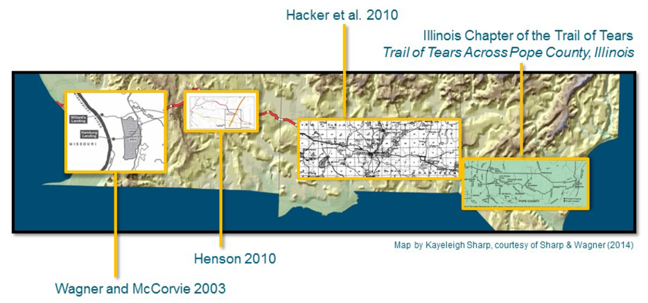

2013 Archival Research into Cherokee Trail of Tears-Related Sites in Southern Illinois
2010 The Trail of Tears in Johnson County, Illinois. Johnson County Genealogical and Historical Society.
2010 Geophysical Investigation at Camp Ground Cemetery and Church near Anna, Illinois, April 2010. Department of Geology, Southern Illinois University, Carbondale.
